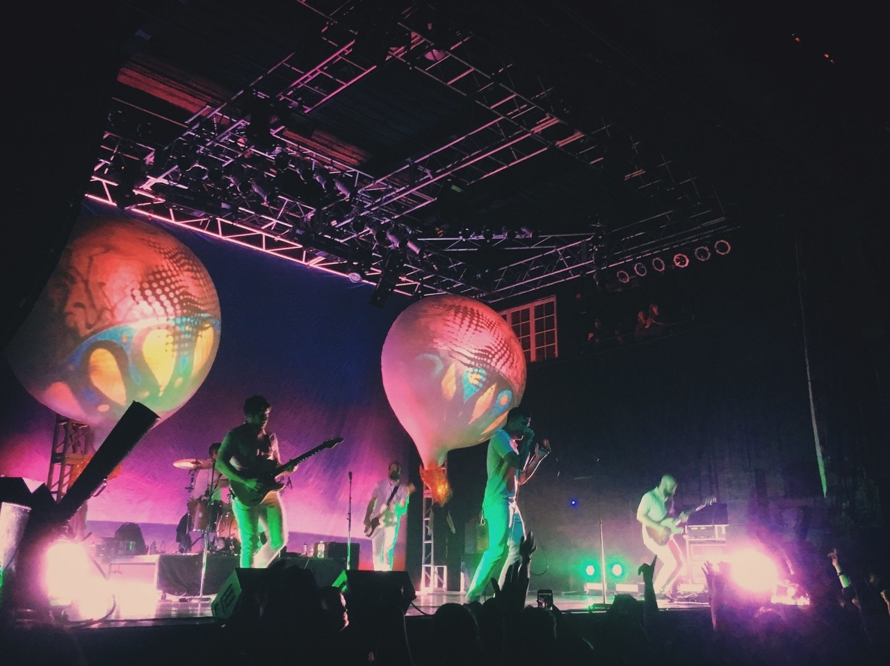
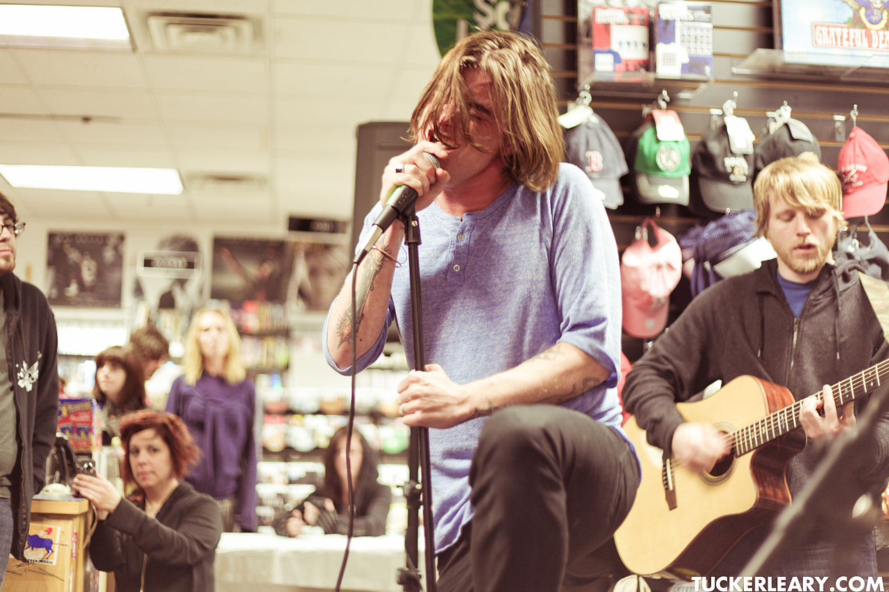
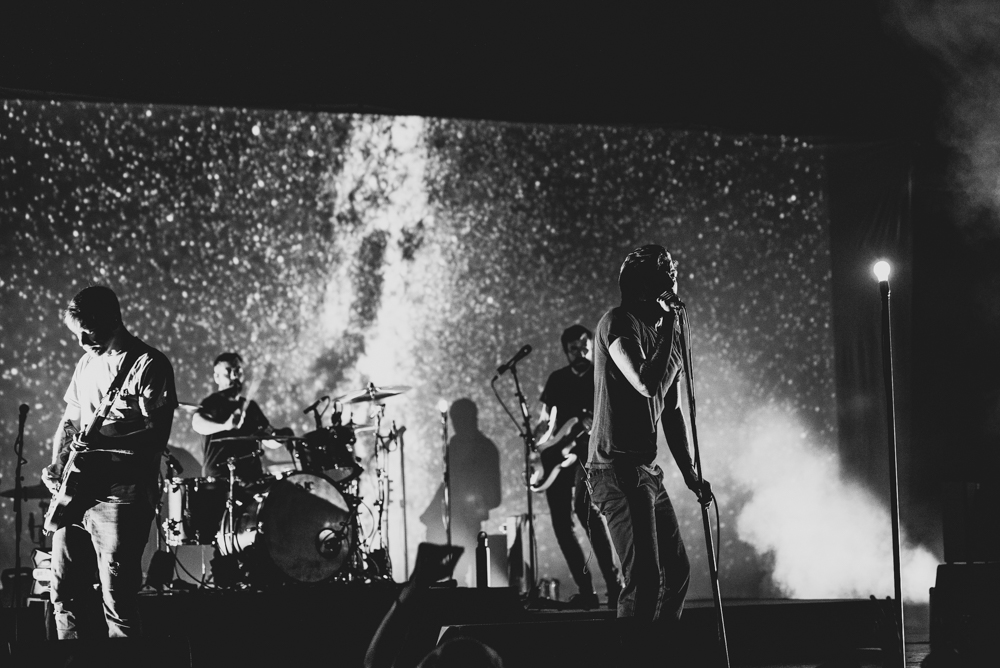
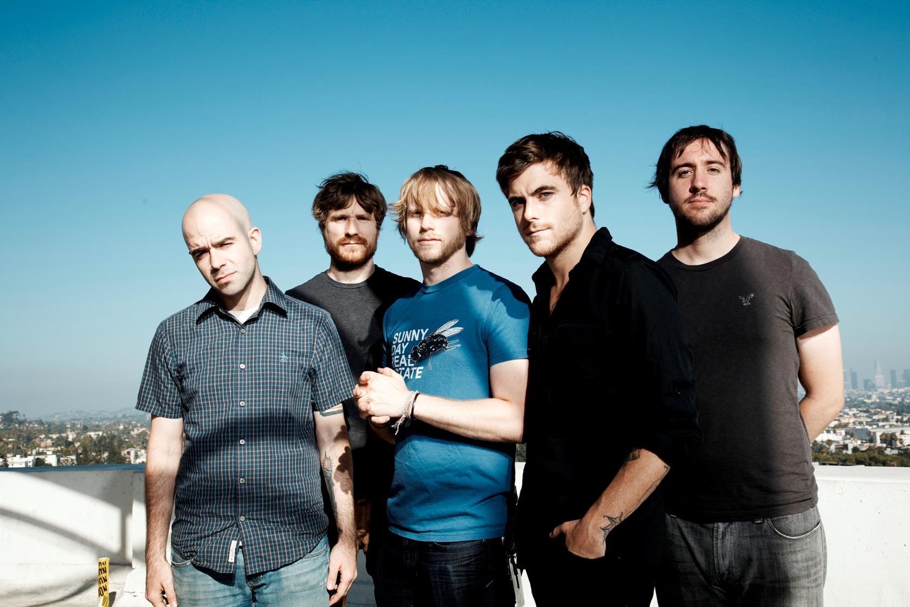

Vocalist Anthony Green left the band Saosin, in 2004, later meeting up with Colin Frangicetto,
a friend with whom he had "jammed" during his stay, and they decided to begin recording and recruiting.
Thus, Circa Survive was born.
They draw influences from soft rock, post-hardcore, experimental rock, emo, progressive rock, art rock,
and pop musicians.According to lead singer Anthony Green, Circa Survive have been influenced by Deftones,
Thrice, Paul Simon, dredg, Björk. Green cites Nirvana as a major influence, with Circa Survive
frequently performing covers of Nirvana songs.
Throughout their musical career, but particularly with respect to their first album Juturna,
the 2004 film Eternal Sunshine of the Spotless Mind has been a large influence on Circa Survive.
The album's hidden track is based on the Mark Z. Danielewski novel House of Leaves,
lending it an unofficial title.
Lyrically, their third album Blue Sky Noise is based on Green's struggles with mental illness,
with many of the lyrics written during his voluntary three-week stay in a mental health facility.
The Inuit Sessions (2005)
Circa Survive's first release was the EP, The Inuit Sessions, on March 18, 2005. It contained four tracks:
"Act Appalled", "Handshakes at Sunrise", "The Great Golden Baby", and "Suspending Disbelief".
Juturna (2005)
Juturna, Circa Survive's first album, was released on April 19, 2005,
in the United States and on January 31, 2006, in Japan on Equal Vision Records.
Juturna peaked at #183 on the Billboard 200. The concept of the album is speculated
by fans to be vaguely about human memories. "Oh, Hello" exemplifies this with its lyrics.
The album's sound is characterized by its prominent utilization of effects-laden, dual guitar
melodies over polyrythmic percussion. The guitarists' approach to songwriting takes on characteristics
of jazz and shoegaze music. The album has since gone on to be considered massively influential to the
post-hardcore community.
On Letting Go (2007)
Released on May 29, 2007, by Equal Vision Records, the album entered the U.S. Billboard 200 at #24,
selling about 24,000 copies in its first week. Up to July 11, 2007, it had sold 51,357 copies in the U.S. alone.
As with previous albums, Esao Andrews designed the artwork and Brian McTernan produced the album.
The band's sound
did not radically change with this release. It was still polished and refined, with guitars and drums much tighter
(but still meandering when needed to) and bass more prominent. Lyrically, the band "...evokes an era when
hazy lyricism and reckless introspection were prerequisites for legitimacy and timelessness."

×

Blue Sky Noise and Appendage (2008–2010)
A short leg of shows in the Eastern U.S. occurred in late 2008 and four shows were played in Southern California
in February 2009. After that, the band did not tour again until the tentatively planned headlining tour for their
forthcoming third album. Anthony Green's growth as a guitarist played a major role on Blue Sky Noise,
which the band framed as an entirely "new chapter".
On Twitter, they stated that they would be recording 16 songs, but that they would not all be on the album.
However, they said they would release them all somehow.
On February 16, 2010, they announced their new album would be titled Blue Sky Noise, and would be released on April 20, 2010.
The album entered the Billboard 200 at #11, the band's highest position.
Circa Survive's second EP, Appendage, was released on November 30, 2010. It contains five tracks:
"Sleep Underground" (Demo), "Stare Like You'll Stay", "Everyway", "Backmask" and "Lazarus".

×

Violent Waves (2012)
On April 16, 2012, Circa Survive began recording their fourth record, "Violent Waves". On June 25, 2012,
Circa launched the Violent Waves Pre-Order webpage, officially announcing the album's title and release date,
August 28, 2012, along with a new song titled "Suitcase". The band also confirmed that the album would be self-released.
The album debuted at #3 on the Top Modern Rock/Alternative Albums and #15 on the Billboard Top 200 without any label or distribution support.
As with Circa Survive's previous albums, Esao Andrews created the album artwork.

×

Descensus (2014)
On August 15, 2014, the band announced their signing to Sumerian Records for the release
of the fifth album. In an Alternative Press interview published in August 2014, Green said,
"It’s definitely the most aggressive Circa record we’ve ever made. It’s the first record of
ours I’ve been able to listen to front to back without having that song that I’m like,
'Yeah, I could’ve done better here.'Every song has this moment in it that makes me feel ridiculous.
I feel like I just outdid myself. I feel like we did better than we did before."
The album, entitled Descensus was released on November 24, 2014. The album art was once again made by Esao Andrews.
On October 27, 2014, the band released the first single and music video from Descensus titled "Schema".
The second single "Only the Sun" was shown on November 5, 2014.

×

The Amulet (2017)
On July 10, 2017 the band announced their next LP The Amulet.
Alongside the announcement they released a single titled "Lustration" with accompanying music video.
The album was released on September 22, 2017 through Hopeless Records. On August 10, 2017, the band released
its second music video single "Rites of Investiture". On August 30, 2017, they released their third and title
track single "The Amulet". Shortly before the LP's release on September 14, 2017, the band released its
final music video single "Premonition of the Hex".
In October 2018 the band released two songs called "Dark Pools" and "Indras Net" for the upcoming deluxe edition
of "The Amulet" on November 2, 2018. As well as a video for the song "Flesh and Bone".

×

.jpg)